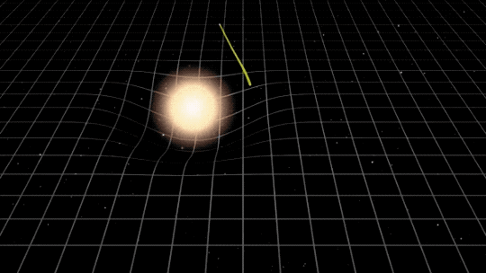

Holes
A region of spacetime

Black Holes
In a black hole is a region of spacetime where gravity is so strong that nothing, no particles or even electromagnetic radiation such as light can escape from it. The theory of general relativity predicts that a sufficiently compact mass can deform spacetime to form a black hole. The boundary of no escape is called the event horizon. Although it has an enormous effect on the fate and circumstances of an object crossing it, according to general relativity it has no locally detectable features. In many ways, a black hole acts like an ideal black body, as it reflects no light. Moreover, quantum field theory in curved spacetime predicts that event horizons emit Hawking radiation, with the same spectrum as a black body of a temperature inversely proportional to its mass. This temperature is on the order of billionths of a kelvin for black holes of stellar mass, making it essentially impossible to observe directly. Objects whose gravitational fields are too strong for light to escape were first considered in the 18th century by John Michell and Pierre Simon Laplace. The first modern solution of general relativity that would characterize a black hole was found by Karl Schwarzschild in 1916, and its interpretation as a region of space from which nothing can escape was first published by David Finkelstein in 1958. Black holes were long considered a mathematical curiosity; it was not until the 1960s that theoretical work showed they were a generic prediction of general relativity. The discovery of neutron stars by Jocelyn Bell Burnell in 1967 sparked interest in gravitationally collapsed compact objects as a possible astrophysical reality. The first black hole known as such was Cygnus X-1, identified by several researchers independently in 1971. Black holes of stellar mass form when very massive stars collapse at the end of their life cycle. After a black hole has formed, it can continue to grow by absorbing mass from its surroundings. By absorbing other stars and merging with other black holes, supermassive black holes of millions of solar masses (M☉) may form. There is consensus that supermassive black holes exist in the centers of most galaxies.
Black Holes in the Milky Way
Aproximate size
Biggest Black Hole
Types of black holes
Black Hole Photos

Time
A Mathematical model which fuses the three dimensions of space and the one dimension of time into a single four-dimensional manifold.
Spacetime
In physics, spacetime is any mathematical model which fuses the three dimensions of space and the one dimension of
time into a single four-dimensional manifold. Spacetime diagrams can be used to visualize relativistic effects, such as why different
observers perceive differently where and when events occur.
Until the 20th century, it was assumed that the three-dimensional geometry of the universe
(its spatial expression in terms of coordinates, distances, and directions) was independent of one-dimensional time.
The physicist Albert Einstein helped develop the idea of spacetime as part of his theory of relativity.
Prior to his pioneering work, scientists had two separate theories to explain physical phenomena:
Isaac Newton's laws of physics described the motion of massive objects, while James Clerk Maxwell's electromagnetic models explained
the properties of light. However, in 1905, Einstein based a work on special relativity on two postulates:
- The laws of physics are invariant (i.e., identical) in all inertial systems (i.e., non-accelerating frames of reference)
- The speed of light in a vacuum is the same for all observers, regardless of the motion of the light source.
The spacetime continuum is infinite
It's theoretically possible that time can be bent.
Acording to string theory, the universe has 10 dimensions.
Time travel is theoretically possible
Spacetime Gifs

Stars
The collapsed core of a massive supergiant star

Neutron Stars
In A neutron star is the collapsed core of a massive supergiant star, which had a total mass of between 10 and 25 solar masses, possibly more if the star was especially metal-rich. Except for black holes, and some hypothetical objects (e.g. white holes, quark stars, and strange stars), neutron stars are the smallest and densest currently known class of stellar objects. Neutron stars have a radius on the order of 10 kilometres (6.2 mi) and a mass of about 1.4 solar masses. They result from the supernova explosion of a massive star, combined with gravitational collapse, that compresses the core past white dwarf star density to that of atomic nuclei. Once formed, they no longer actively generate heat, and cool over time; however, they may still evolve further through collision or accretion. Most of the basic models for these objects imply that neutron stars are composed almost entirely of neutrons (subatomic particles with no net electrical charge and with slightly larger mass than protons); the electrons and protons present in normal matter combine to produce neutrons at the conditions in a neutron star. Neutron stars are partially supported against further collapse by neutron degeneracy pressure, a phenomenon described by the Pauli exclusion principle, just as white dwarfs are supported against collapse by electron degeneracy pressure. However, neutron degeneracy pressure is not by itself sufficient to hold up an object beyond 0.7M☉ and repulsive nuclear forces play a larger role in supporting more massive neutron stars. If the remnant star has a mass exceeding the Tolman Oppenheimer Volkoff limit of around 2 solar masses, the combination of degeneracy pressure and nuclear forces is insufficient to support the neutron star and it continues collapsing to form a black hole. The most massive neutron star detected so far, PSR J0740+6620, is estimated to be 2.14 solar masses.
Neutron Stars in the Milky Way
Fastest spinning Neutron Star
Largest Neutron Star
Density of a Neutron Star